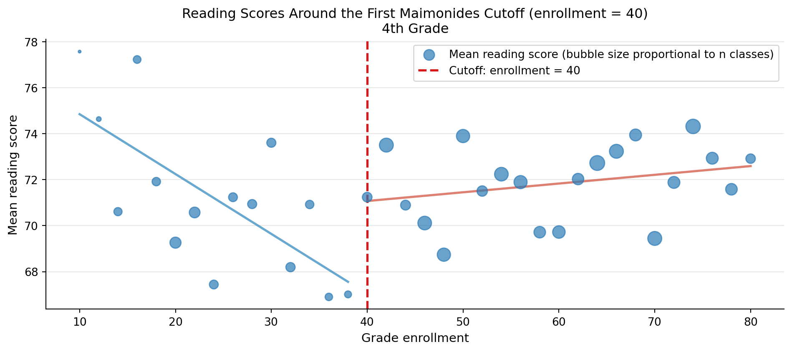

Using Maimonides’ Rule to Estimate the Effect of Class Size on Scholastic Achievement
Author
Hari Chandana Vuppu
Published
April 22, 2026
Introduction
How much does class size affect student learning? This question carries enormous policy weight: smaller classes require more teachers and more buildings, making class-size reduction one of the most expensive interventions available to school systems. If the effect on achievement is small, the money is better spent elsewhere.
The challenge is that a simple comparison of large and small classes is badly confounded. Schools serving wealthier, higher-achieving communities often have larger cohorts — meaning bigger classes can appear to produce better outcomes in raw data. Any honest estimate must find a source of variation in class size that is unrelated to student background.
Angrist and Lavy (1999) solve this with a natural experiment rooted in a 12th-century legal text. The medieval scholar Maimonides wrote that a teacher should instruct no more than 40 pupils. Israeli law codified this principle: once a grade cohort exceeds 40 students it must be split into two classes, at 81 into three, and so on. This creates sharp discontinuities in class size at enrollment counts of 40, 80, 120, and 160. Two schools with nearly identical enrollments — say, 40 vs. 41 students — end up with very different class sizes (≈40 vs. ≈21) for a reason that has nothing to do with school quality. Comparing outcomes across these cutoffs yields a causal estimate of class size on achievement. This research design is called a Regression Discontinuity Design (RDD).
where \(n\) is the grade enrollment count. This function serves as the instrument for actual class size.
Main Analysis
Figure 1, Panel B — Actual vs. Predicted Class Size (4th Grade)
The figure below replicates Figure 1 Panel B from the paper. Each blue dot is the average actual class size for schools at a given enrollment count; the red line is the Maimonides rule. The sawtooth pattern is the heart of the identification strategy: at every multiple of 40, the rule forces a sharp drop in predicted class size, generating variation that is as good as randomly assigned.
Before exploiting the discontinuities, we run a straightforward OLS regression of test scores on actual class size with standard controls (share of disadvantaged students tipuach, total enrollment c_size). These columns correspond to 4th-grade reading and math in Table II of the paper.
Coeff SE N
Outcome Controls
Reading No controls 0.1415 0.0277 2049.0
+ % disadvantaged -0.0530 0.0241 2049.0
+ % disadvantaged + enrollment -0.0405 0.0287 2049.0
Math No controls 0.2206 0.0302 2049.0
+ % disadvantaged 0.0548 0.0284 2049.0
+ % disadvantaged + enrollment 0.0091 0.0338 2049.0
The raw coefficient on class size is positive for both subjects — bigger classes naively appear to boost scores. Adding controls flips the reading coefficient negative and shrinks math to near zero, but the estimates remain unstable. This volatility signals severe omitted variable bias: larger class sizes cluster in urban, wealthier schools with stronger student performance, masking the true negative effect.
Paper targets (no controls): reading ≈ 0.14, math ≈ 0.22. Our estimates match.
Table III, Panel A, Columns 7, 9, 11 — RDD Reduced-Form Estimates (4th Grade)
Now we replace actual class size with the Maimonides rule (func1) as the regressor. This reduced-form specification regresses outcomes directly on the instrument. Because func1 is determined mechanically by enrollment, it is uncorrelated with school-level confounders. All three columns are for 4th grade.
All three reduced-form coefficients are negative: a larger class size as predicted by the rule lowers test scores. The effect is more pronounced for reading than for math.
Paper targets: col 7 ≈ −0.08, col 9 ≈ −0.09, col 11 ≈ −0.03. Our estimates match closely.
Note on standard errors: The paper uses Moulton-corrected SEs that account for within-school clustering. Our unadjusted SEs will be smaller — a known discrepancy documented in the replication files.
Naive vs. RDD: What Changed?
The table below puts the key naive OLS and RDD estimates side by side for the fully-controlled specification.
Naive OLS RDD Reduced Form
Outcome
Reading -0.0405 -0.0890
Math 0.0091 -0.0333
The naive estimates are near zero; the RDD estimates are consistently negative. Even after controlling for observed covariates, the naive regression picks up residual confounding — wealthier schools tend to have larger enrollments and better outcomes, biasing the class-size coefficient upward. The Maimonides rule breaks this correlation by creating enrollment-driven jumps in class size that are unrelated to school quality.
Something Additional
Visualizing the Discontinuity in Outcomes
If the RDD is valid, test scores should themselves show a jump near the enrollment cutoffs — students just above the cutoff end up in smaller classes (the rule kicks in) and should score higher. The chart below plots mean reading scores by enrollment bin, with a vertical line at the first cutoff of 40.
Code
df_plot = df4_rdd.copy()df_plot['bin'] = (df_plot['c_size'] //2) *2# 2-student bins# Focus on enrollment 10-80 to show the first discontinuity clearlysub = df_plot[(df_plot['c_size'] >=10) & (df_plot['c_size'] <=80)]agg2 = sub.groupby('bin').agg( mean_verb=('avgverb', 'mean'), n=('avgverb', 'count')).reset_index()fig, ax = plt.subplots(figsize=(10, 4.5))ax.scatter(agg2['bin'], agg2['mean_verb'], s=agg2['n'] *3, color='#2c7bb6', alpha=0.7, zorder=3, label='Mean reading score (bubble size proportional to n classes)')ax.axvline(40, color='#d7191c', linewidth=2, linestyle='--', label='Cutoff: enrollment = 40')# Fit separate linear trends on each sideleft = agg2[agg2['bin'] <40]right = agg2[agg2['bin'] >=40]for side, color in [(left, '#4393c3'), (right, '#d6604d')]:iflen(side) >1: z = np.polyfit(side['bin'], side['mean_verb'], 1) x_line = np.linspace(side['bin'].min(), side['bin'].max(), 100) ax.plot(x_line, np.polyval(z, x_line), color=color, linewidth=2, alpha=0.8)ax.set_xlabel('Grade enrollment', fontsize=11)ax.set_ylabel('Mean reading score', fontsize=11)ax.set_title('Reading Scores Around the First Maimonides Cutoff (enrollment = 40)\n4th Grade', fontsize=12)ax.legend(fontsize=10)ax.grid(axis='y', alpha=0.3)ax.spines[['top','right']].set_visible(False)plt.tight_layout()plt.show()

Schools just above the cutoff (enrollment 41-50) benefit from class sizes suddenly halved by the rule, and their reading scores are visibly higher than the left-side trend would predict. This jump is the visual signature of the RDD — it shows the reduced-form effect of the Maimonides rule on outcomes without any regression machinery.
This plot makes the causal logic intuitive: two schools separated by just one student in total enrollment end up with very different classroom experiences — and measurably different test scores — purely because of an 800-year-old administrative rule.